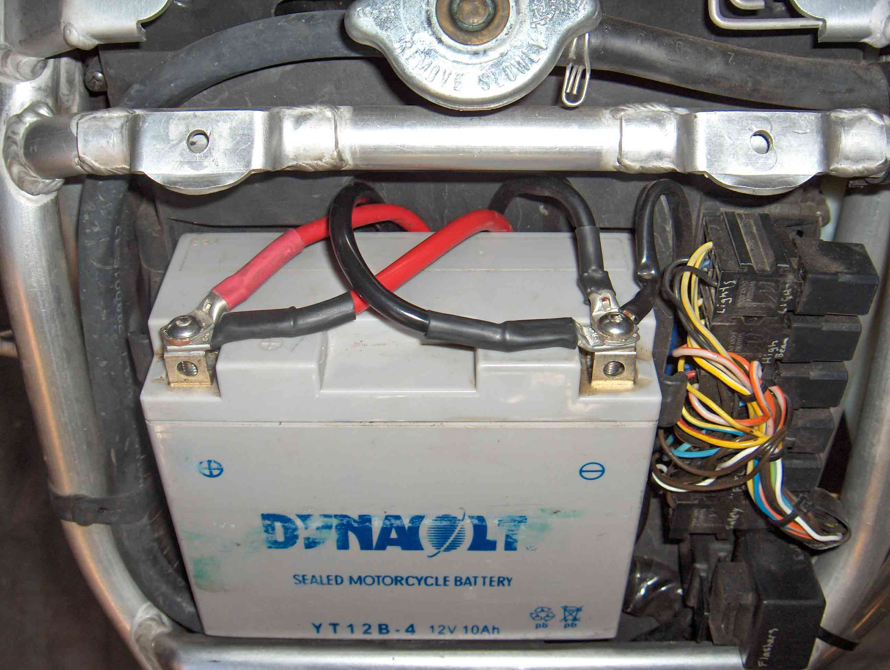

Tre Battery Cable
(18 Jul 2018)
The Tornado (and TNT) suffers from too much voltage drop on the battery cables during cranking. This
results in sluggish cranking and contributes to the resetting clocks problem.
The existing cables are each 1m long and use 8mm² wire. The total resistance is 0.005 ohms, which causes
a 0.625V drop if the battery can deliver 125A. That's 78 W that's not spinning the engine.
Not hopeless, but half that is better, and of course when the engine is hot, the starter will draw a lot
more current (~200 A). Then the drop is closer to 1 V and you've lost 200 W just in the wires.
Due to the restricted space under the battery, an additional 8mm² cable set was added, rather than replacing
the existing cables with 16mm². There is space to add another set if desired, for a total of 24mm², but that
is probably over-kill.
The terminal bolts need to be longer, to accommodate the extra lug. M6 x 15mm worked for me, but depends on
the lug thickness.
The positive cable is 1000 mm long.
The negative cable is 800 mm long.

The finished result.

Cable routing under the battery.
Positive connection to the solenoid (pardon the focus - the camera lied)
Negative connection, 200 mm shorter, bolted to the rear of the engine.
The result is crisper, faster cranking.
The TNT especially will benefit from fitting larger cables, as stated by
"vtxbrit" on the Benelliforum,
21 Sep 2006. Refer to his post under "Upgraded Battery/Starter Cables" in the General Discussion thread. The
upgrade shown above, however, refers only to the Tornado.
|